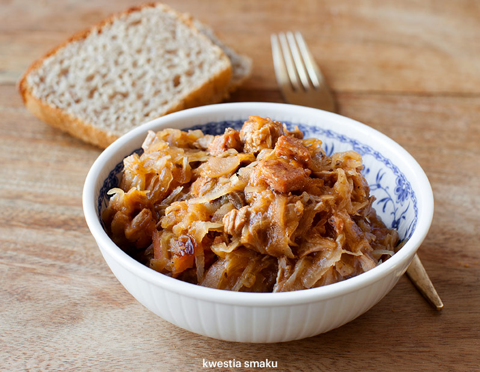

Tkaczyk News
SERWIS INFORMACYJNY
Przepis na przepyszny bigos dla każdego
SKŁADNIKI: 500 g mięsa wieprzowego (np. karkówki), 200 g kiełbasy, 1 cebula, 2 łyżki oleju roślinnego, 3 szklanki bulionu lub wody, 30 g suszonych borowików, 2 łyżki powideł śliwkowych lub kilka suszonych śliwek, 1 jabłko (np. reneta lub antonówka) - opcjonalnie, 1 kg kiszonej kapusty, 1 łyżka koncentratu pomidorowego, 1 łyżka mąki, 1 łyżka masła
PRZYGOTOWANIE: Mięso pokroić w kostkę. Cebulę pokroić w kosteczkę i zeszklić na oleju w dużym garnku. Dodać mięso i dokładnie je obsmażyć. Wlać 2 szklanki gorącego bulionu lub wody z solą i pieprzem, zagotować. Następnie dodać połamane suszone grzyby, przykryć, zmniejszyć ogień i gotować przez ok. 45 minut. Dodać listek laurowy, ziela angielskie, kminek, majeranek, powidła śliwkowe lub posiekane śliwki, obrane i pokrojone w kosteczkę obrane jabłko i wymieszać. Dodać odciśniętą kiszoną kapustę oraz wlać szklankę wody, wymieszać. Przykryć i gotować przez ok. 15 minut. Kiełbasę obrać ze skóry, pokroić w kostkę i podsmażyć na patelni. Dodać do kapusty i gotować przez ok. 30 minut. Pod koniec dodać koncentrat pomidorowy. Mąkę podsmażyć na suchej patelni, gdy zacznie brązowieć dodać łyżkę masła i mieszać aż masło się rozpuści. Trzymając patelnię na ogniu dodać stopniowo kilka łyżek kapusty cały czas mieszając. Przełożyć zawartość patelni z powrotem do garnka, wymieszać i zagotować.